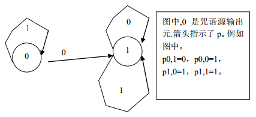

传说中，有个神奇的潘多拉宝盒。如果谁能打开，便可以拥有幸福、财富、爱情。可是直到真的打开，才发现与之
相随的还有灾难、不幸。其实，在潘多拉制造这个宝盒的时候，设置了一些咒语来封锁住灾难与不幸。然而，直到
科技高度发达的今天，人们才有希望弄懂这些咒语。所以说，上千年来，人们只得忍受着各种各样的疾病和死亡的
痛苦。然而，人类的命运从此改变了。经过数十年的研究，NOI组织在最近终于弄清楚了潘多拉咒语的原理。咒语
是由一个叫做咒语机的机器产生的。用现在的名词来解释，咒语机其实就是一个二进制产生器，它产生的一个二进
制字符串（这个字符串叫做咒语源）经加密后就形成了咒语。二进制产生器的结构是这样的：它由n个元件组成，
不妨设这n个元件的标号为0到n-1。在每个时刻，都有且仅有一个信号，它停留在某个元件上。一个信号就是一个
二进制字符串。最开始，有一个空串信号停留在元件0上。在某个时刻，如果有一个信号s停留在元件I上，那么，
这时元件i可以将信号后面加一个0,然后把信号传给元件pi,0，也可以将信号后面加一个1,然后传给元件pi,1。也
就是说，下一个时刻有可能，一种可能是一个信号S0（表示字串S后面加一个0形成的字串）仪在元件pi,0上，另一
种可能是有一个信号S1停留在元件pi,1上。有的元件可以将停留在它上面的信号输出，而输出的信号就成为了咒语
源，这样的元件叫做咒语源输出元。不难发现，有些口语源是可能由一个咒语机产生的，而另一些咒语源则不行。
例如，下图的咒语机能产生1,11,111,1111,...等咒语源，但是不能产生0,10,101等咒语源。在这个盒子上，有K个
咒语机，不妨将这些咒语机从0到K-1标号。可能有这种情况，一个咒语机i能够产生的口语源，咒语机j都能产生。
这时，我们称咒语机j是咒语机i的升级。而衡量这个例子的复杂程度的一种办法是：看这个盒子上升级次数最多的
一个咒语机。即：找到一个最长的升级序列a1,a2...at。该升级序列满足：序列中任意两个咒语机的标号都不同，
且都是0到k-1（包含0和k-1）之间的整数，且咒语机a2是咒语机a1的升级，咒语机a3是咒语机a2的升级...，咒语
机at是咒语机at-1的升级。你想远离灾难与不幸吗？你想从今以后沐浴幸福的阳光吗？请打开你的潘多拉之盒吧。
不过在拱形它之前，你先得计算一下宝盒上最长的升级序列。
